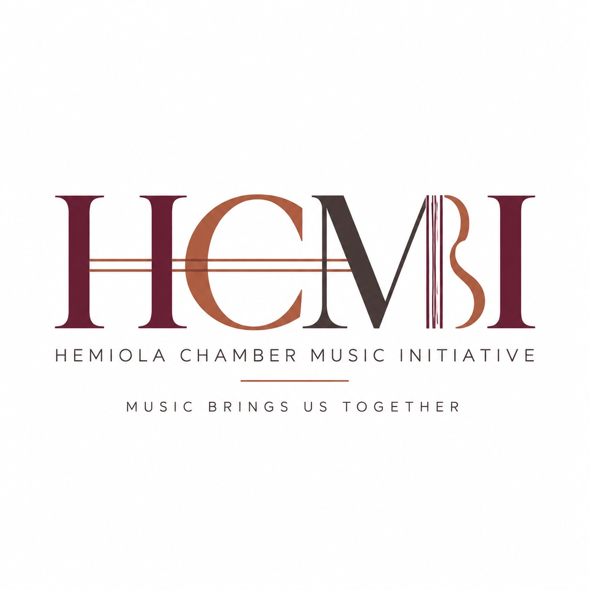

Professional chamber music beyond the traditional concert hall—accessible, engaging, and meaningful musical experiences in the places where communities live, learn, receive services, and gather.
Partner with HemiolaThrough artistic excellence, interactive programming, new music, and collaborative community partnerships, HCMI connects people through chamber music while welcoming new audiences into the experience.
Professional chamber music presented through intimate and flexible small ensembles.
Welcoming and interactive experiences that bring audiences closer to the music and musicians.
Programs developed in conversation with community partners and responsive to the people they serve.
Commission new works that support HCMI’s community outreach mission, giving composers opportunities to create music for our musicians and the communities we serve.
Are you a community organization, youth program, senior community, library, healthcare organization, or performance venue interested in exploring a collaboration with Hemiola?
We believe meaningful community engagement begins with listening. We would love to learn about your community and explore how we can create a chamber music experience together that is welcoming, engaging, and responsive to the people you serve.
Start a Conversation